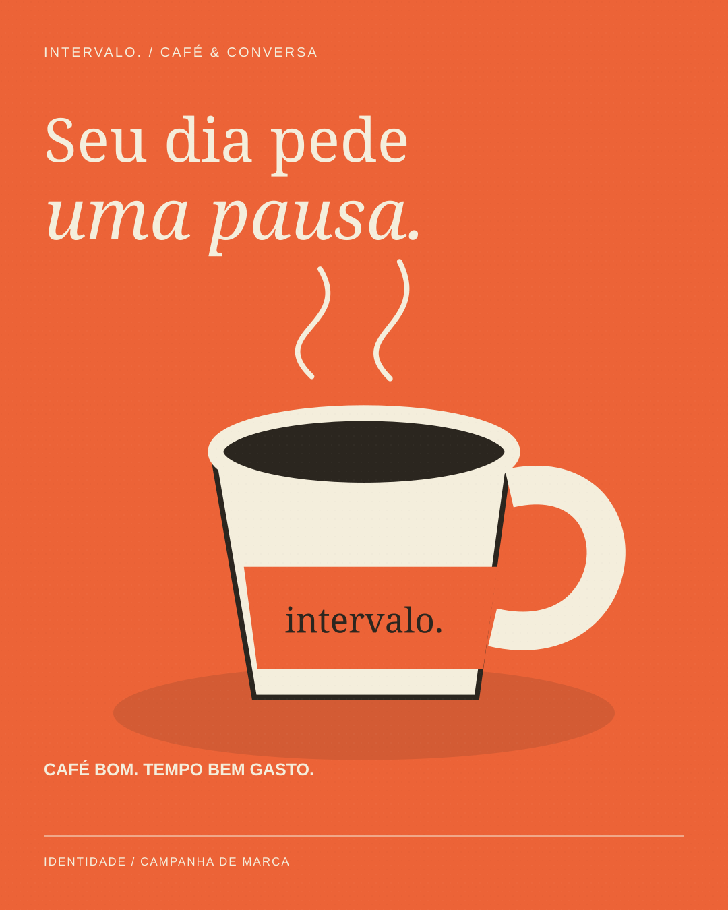
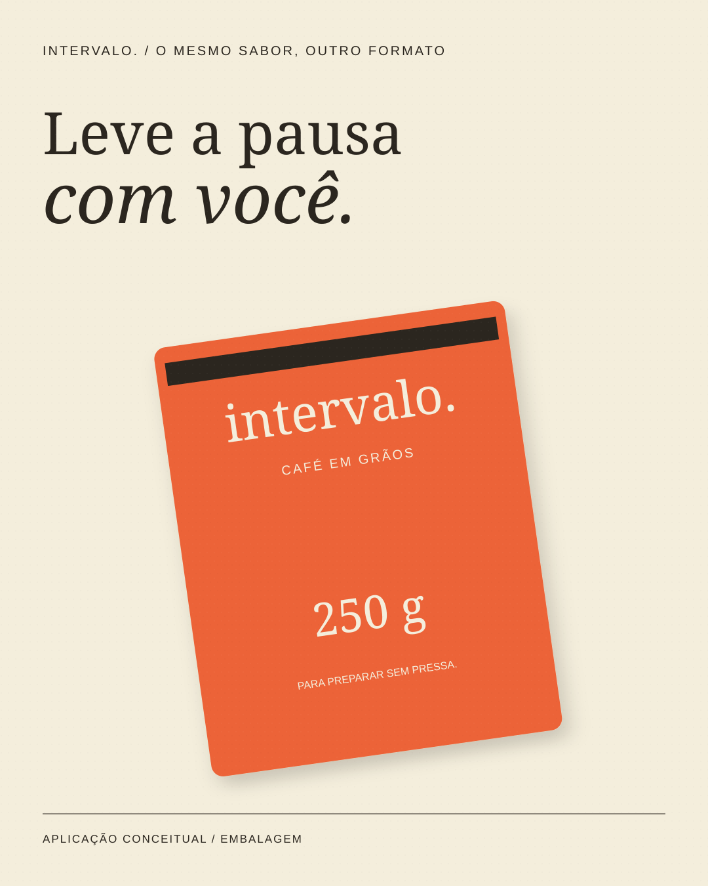
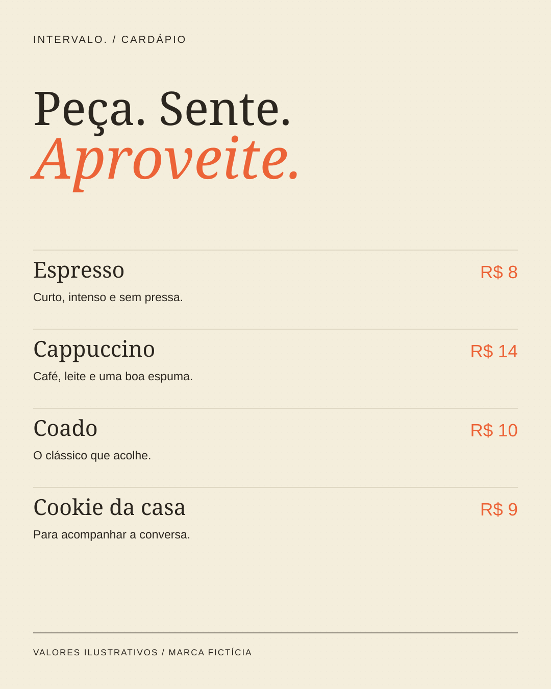

05 / ESTUDO CONCEITUAL
Intervalo
Uma pausa com identidade própria.
Criar uma marca de cafeteria e mostrar como ela funciona em campanha, embalagem e cardápio.
#EC6337#F4EEDC#2B261F
01 / DECISÃO VISUAL
A xícara ilustrada identifica a campanha; a embalagem e o cardápio mostram outras escalas de aplicação.
02 / SISTEMA
Laranja quente, creme e letras serifadas criam uma presença acolhedora e reconhecível.
03 / ESCOPO
3 peças conceituais, com SVG editável e PNG. Estudo criado com apoio de IA; sem cliente, produção impressa ou resultados comerciais atribuídos.









Marcas, casais, eventos e preços são fictícios. As aplicações de papelaria e embalagem são representações digitais; não foram produzidas fisicamente.